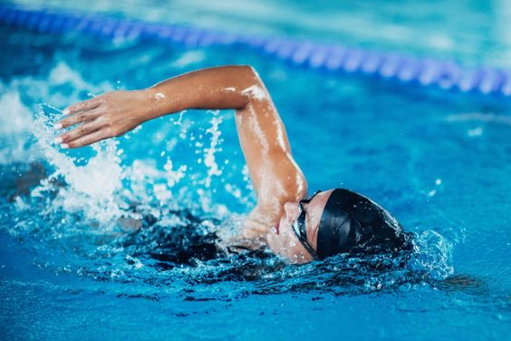

¿Que es la natacion ?
La natacion es una actividad física y deporte deporte acuatico que implica el movimiento y desplazamiento en el agua mediante el uso de las extremidades del cuerpo. Se puede practicar en piscinas, ríos, lagos o en el mar.

La natacion es una actividad física y deporte deporte acuatico que implica el movimiento y desplazamiento en el agua mediante el uso de las extremidades del cuerpo. Se puede practicar en piscinas, ríos, lagos o en el mar.
La natación tienes cuatro estilos que se deben de conocer: Crol, Dorso, Pecho y Mariposa.
El estilo crol, también conocido como estilo libre, es uno de los estilos de natación más rápidos y eficientes. El estilo ha recorrido un largo camino desde sus raíces indígenas hasta convertirse en el estilo más rápido y popular en la natación competitiva moderna. Su evolución refleja el continuo esfuerzo por mejorar la eficiencia y la velocidad en el agua.
El estilo de dorso,también conocido como estilo espalda,el nadador se coloca en posición dorsal y al igual que el crol se realiza una acción de frente donde mueves ambos brazos de forma alterna y un número de movimientos de piernas.
El estilo de pecho,también conocido como estilo braza, es uno de los cuatro estilos principales de la natación competitiva. Es reconocido por sus movimientos simétricos y coordinados de brazos y piernas, así como por su técnica de respiración única. Aunque se caracteriza por ser el más lento de todos.
El estilo de mariposa,, también conocido como estilo delfín, es conocido por su técnica exigente y su impresionante visualidad. En este estilo se necesita un nivel de coordinación perfecta con las extremidades inferiores y superiores haciendo en los inferiores movimientos como los delfines.
Existen cuatro tipos de natacion , entre ellos se encuentran: Artistica , Competitiva , De aguas abiertas y Recreativa.
La natación artística, anteriormente conocida como natación sincronizada, es una disciplina acuática que combina elementos de natación, gimnasia y danza, en la cual los nadadores (solos, en dúo, en equipos o en combinación libre) realizan rutinas coreografiadas al ritmo de la música. Es un deporte altamente técnico y artístico que requiere gran habilidad en la natación, fuerza, flexibilidad y sincronización.
Caracteristicas de la natacion artistica:
Eventos de la diciplina:
La natacion competitiva es una disciplina deportiva en la que los nadadores compiten para ser los más rápidos en completar una distancia específica en una piscina, utilizando uno de los cuatro estilos reconocidos: estilo libre, dorso, pecho y mariposa. Es uno de los deportes más populares y practicados en el mundo, tanto a nivel amateur como profesional.
Tipos de eventos en la natacon:
Eventos importantes:
La natacion de aguas abiertas, tambien conocida como Open water,es una disciplina que se practica en cuerpos de agua naturales como océanos, ríos, lagos y embalses. A diferencia de la natación en piscina, que se lleva a cabo en un entorno controlado, la natación de aguas abiertas presenta desafíos únicos debido a las condiciones variables del agua, el clima y la distancia.
Distancias y Pruebas
La natación recreativa es una forma de natación que se realiza principalmente por diversión, relajación y ejercicio general, en lugar de competición. Es una actividad accesible para personas de todas las edades y niveles de habilidad y puede llevarse a cabo en piscinas, lagos, ríos y océanos.
Caracteristicas: